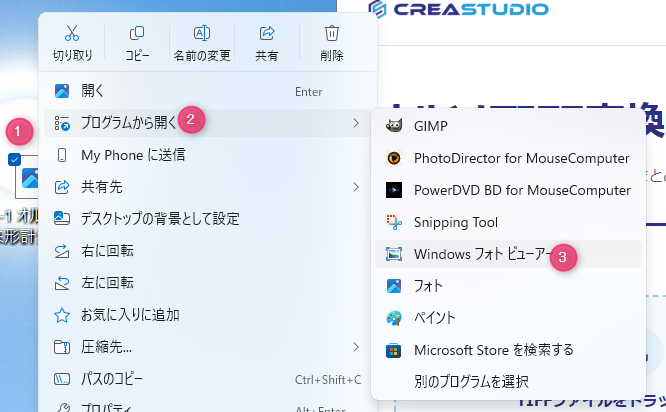

オルソTIFF変換
複数のオルソ画像を座標に沿って1枚にまとめ、1 GB以内のTIFFを作成します。
入力ファイル
合計 6 GBまでTIFFをここにドロップ
.tif / .tiff 複数選択可
0件/0 B
出力ファイル
6-1 オルソ 出来形計測データ.tiff
- 形式
- TIFF（.tiff）
- 圧縮
- LZW（可逆圧縮）
- 出力容量
- 1 GB以内
- 画像サイズ
- 座標系
WindowsでTIFFを開く方法
- TIFFを右クリック
- 「プログラムから開く」
- 「Windows フォト ビューアー」または「フォト」を選択
